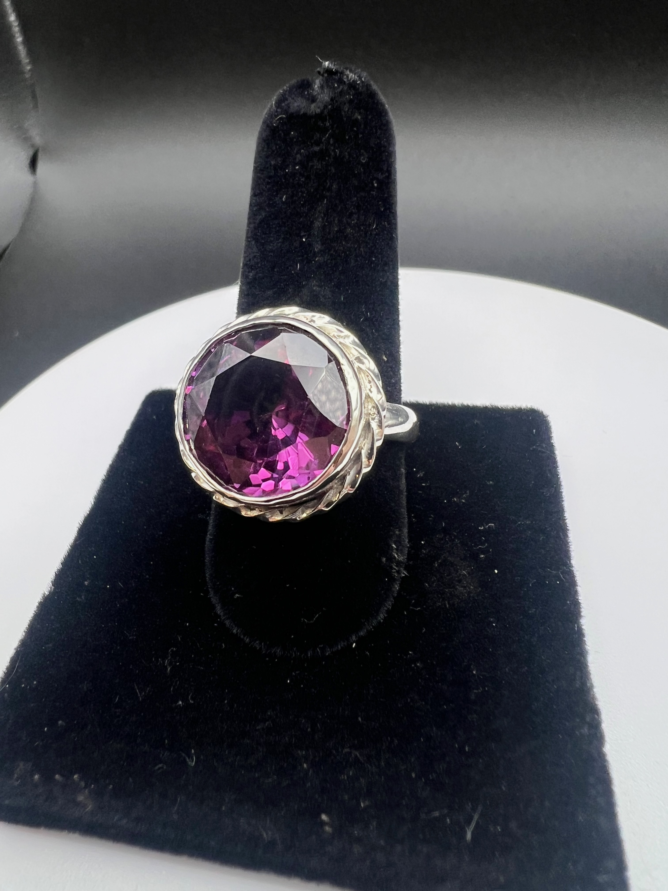
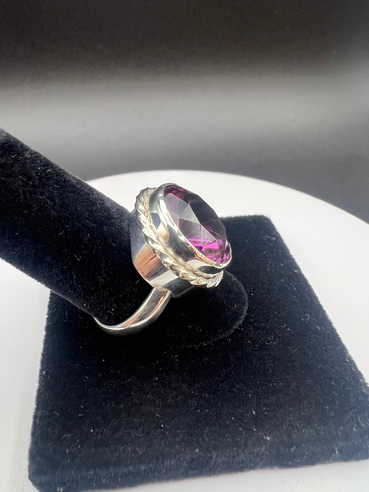

Traditional bezel
Completely handmade from scratch.


A traditional bezel holds a center diamond or gemstone in a custom-fitted rim of precious metal. The rim secures the stone without prongs, and it may encircle the stone completely or only in part. This setting is a full bezel: a continuous band of metal surrounds the whole perimeter, for edge protection and snag-free everyday wear. The stone is faceted, in a round or oval shape.
Bezel settings date back to ancient Egyptian, Greek, and Roman metalwork. They became widely popular in the Art Deco era of the 1920s and 1930s for their clean, geometric lines.
- High security. The metal collar firmly locks the stone in, so there is less risk of losing a gem than with prongs.
- Snag-free profile. A smooth, low profile keeps the ring from catching on clothing, hair, or everyday objects.
- Visual impact. The metal frame can make the center stone look slightly larger, or more sharply defined.
- Approximate finished weight
-
2.5 g in sterling silver.
About 3.2 g in 14k gold, and about 3.8 g in 18k gold.
Working weight, until a finished gold ring is weighed.
Checking the metal price.
- Stone size and shape
- Faceted stones, round or oval. A medium to large stone is ideal for this setting, because the ring is welded to the bezel. Be careful with a deep stone: it needs a much taller bezel, and that can look out of proportion.
Finger size
Finger size is required with every order. Ask for it when the setting is written down.
Lead time
The setting is made to order once the stone is chosen. Allow 2 weeks.
Still to fill in
- Weigh a finished silver ring and set the grams in the page. It is 2.5 g for now.
- Weigh the first gold ring to confirm the estimate.